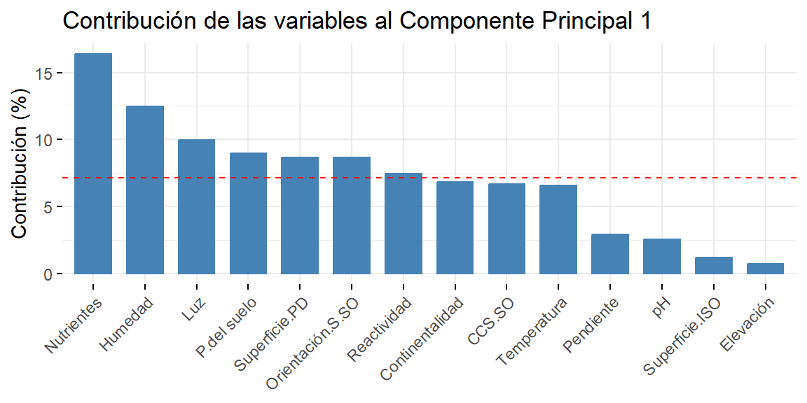
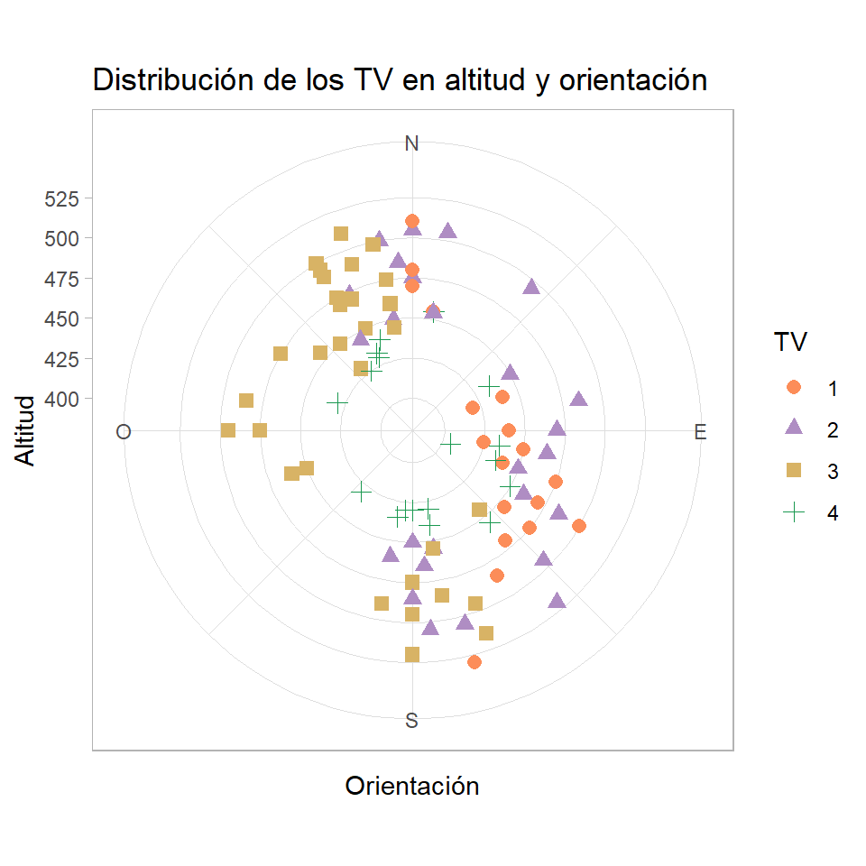
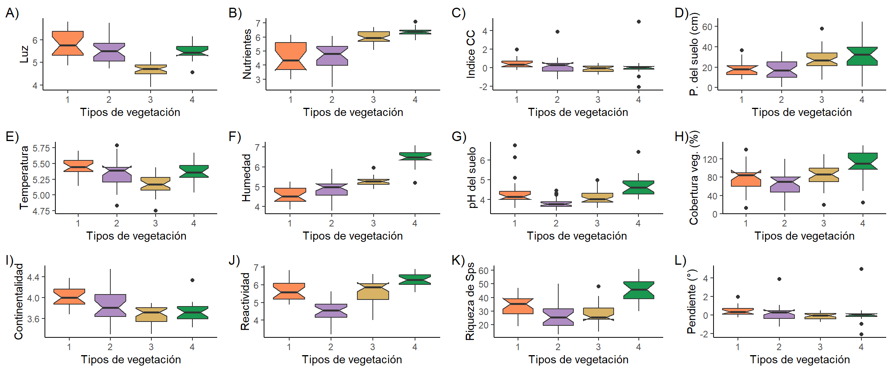
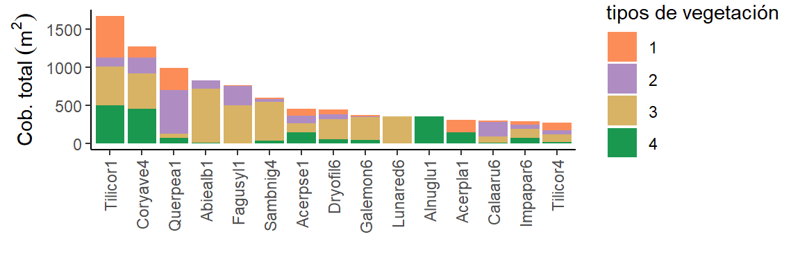
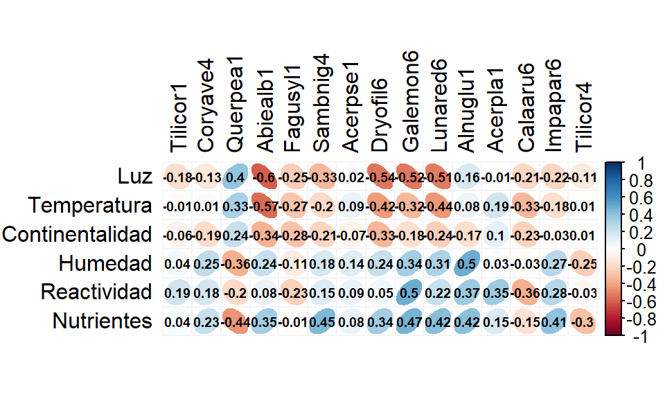
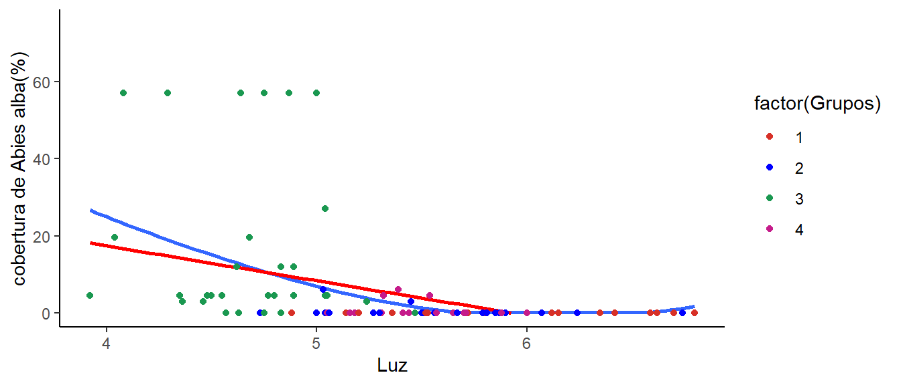
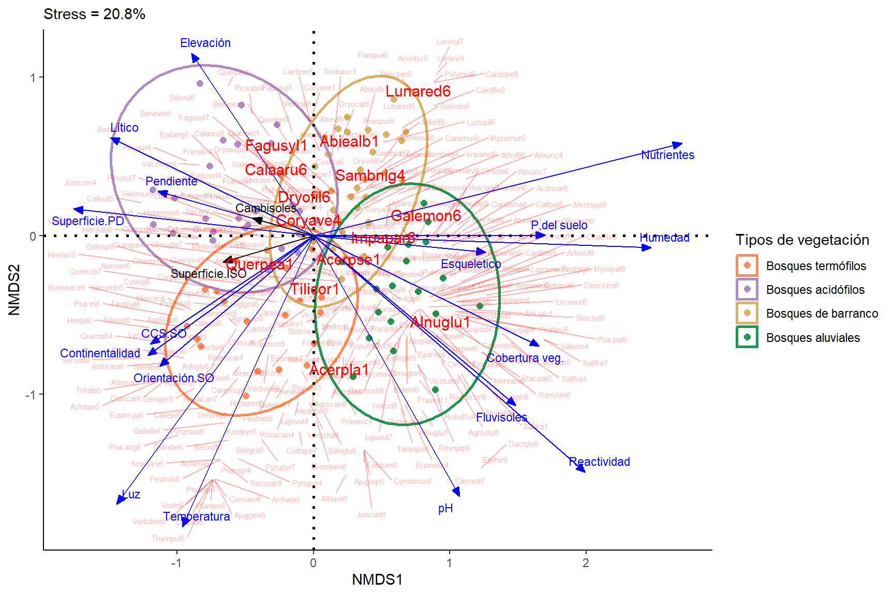

Efecto ambiental sobre la diversidad de plantas en los Valles profundos del río de Moldavia
Autor/a
Josué Mendoza Hewitt & Jhonatan Diaz Camargo
Fecha de publicación
14 de octubre de 2024
Introducción
Las técnicas multivariadas han sido ampliamente utilizadas en la biología y ecología, permitiendo la caracterización o clasificación de las comunidades biológicas considerando la variación en la estructura comunitaria entre las unidades de muestreo, a la vez que se puede evaluar la influencia de gradientes ambientales sobre esta variación. Esto es posible gracias a que estos análisis permiten dilucidar patrones que brindan información sobre la relación de múltiples elementos inherentes a estos sistemas naturales, facilitando la interpretación de generalidades y especificidades de estas relaciones (Borcard et al., 2011; Palacio et al., 2020; Rodríguez-Barrios, 2022). Además, la aplicación de estas técnicas multivariadas por medio de algoritmos computacionales han facilitado que estos se vuelvan cada vez más sofisticados en sus calculos, permitiendo que existan métodos cada vez más eficaces según las bases de datos y objetivos de estudio (Ayoub-Hannaa et al., 2013; Li et al., 2022).
Por esta razón, para el presente trabajo de caso se dispone de una base de datos de acceso público para la aplicación de estas técnicas multivariadas, la cual consiste en un estudio de los vegetación en valles profundos del río de Moldavia en República Checa, donde se tomaron valores de cobertura de cada especie de planta en las unidades de muestreo o parcelas, a la vez que se midieron variables topográficas, topológicas y medidas indirectas de los niveles de nutrientes, continentalidad, humedad, temperatura y reactividad en las parcelas (Ellenberg, 1974, 1979). Este estudio se realizó con el objetivo de probar las predicciones del “fenómeno fluvial” por métodos cuantitativos, el cual mencionaba una serie de observaciones sobre los patrones de vegetación en estos ecosistemas Türk (1994), entre ellos, se destaca la observación de que la distribución y riqueza de los vegetación no es aleatoria. Al ser los patrones de vegetación dependientes del ambiente es posible que estas puedan presentar una influencia similar entre dos o más ecosistemas independientes, tal cual como Zelený & Chytry (2007) encontró en los valles del Río de Moldavia y el Río de Dyje.
Las técnicas multivariadas aplicadas en este caso permitieron revelar información importante para el entendimiento de la interacción ambiente-vegetación en el macizo de bohemia, por lo que es un indispensable entender los fundamentos de estos métodos de manera practica y teórica, para comprender su plausibilidad ante otros casos de estudio.
Contextualización de base de datos
Variables biológicas
Las variables biológicas consisten en las abundancias estimadas para cada especie en cada una de las parcelas, estas abundancias se habrían estimado utilizando la escala ordinal de Braun-Blanquette con 9 grados, y transformándolo en escala porcentual.
Variables ambientales
PLOT y TRANSECT: La variable “plot” sería la parcela correspondiente al muestreo y “TRANSECT” sería al transecto al que pertenece la parcela muestreada.
Variables de topografía
ELEVATION: Datos de elevación sobre el nivel del mar.
SLOPE: Datos del grado de inclinación de las parcelas representado en porcentajes, por lo tanto un angulo de 0° de inclinación es 0% y uno de 90° es 100%.
ASPSW y ASPSSW: Corresponden a datos de la orientación de la parcela, al ser de escala circular se mide la desviación con respecto a una dirección de referencia siendo 22.5° para APSSW, y 45° para ASPSW.
XERSW y XERSSW: corresponden a índices de carga calorífica calculados partir de la pendiente de la parcela y la orientación, la primera corresponde al índice calculado con la orientación de la parcela para el ángulo de referencia de 45°, mientras que XERSSW con la orientación para el ángulo de referencia de 22.5.
SURFSL y SURFIS: Los valores de la “SURFSL” representan la forma del relieve en dirección hacia la pendiente mientras que los de “SURFIS” sería la forma del relieve pero teniendo en cuenta isohipsas, que básicamente sería una línea entre dos puntos que se encuentran a una misma elevación, siendo esta línea la que define la dirección a la que se describe la forma, de manera que ambas variables pueden tener solo tres valores numéricos posibles para cada unidad de muestreo que correspondan a categorías de forma, por lo que esta sería una variable categórica transformada a numérica:
1: Convexa
0: Plana
-1: Cóncava
Condiciones del suelo
LITHIC: Esta variable se asocia con la condición del suelo que es poco profundo y se encuentra a inmediaciones de afloramientos rocoso, siendo importante porque sabe esta condición puede hacer que existan valores subestimados de profundidad del suelo cuando se mide con una barrena. “LITHIC” es una variable binaria siendo los 0 “no” y los 1 “sí”.
CAMBISOL: Esta variable se asocia con el buen desarrollo de las zonificaciones del suelo. “CAMBISOL” es una variable binaria siendo los 0 “no” y los 1 “sí”.
FLUVISOL: Esta se asocia a los suelos influenciados por el agua y formados a partir de depósitos aluviales. “FLUVISOL” es una variable binaria siendo los 0 “no” y los 1 “sí”.
SKELETIC: Variable asociada a suelos extremadamente pedregosos formados sobre acumulaciones de derrubios o escombros rocoso. “SKELETIC” es una variable binaria siendo los 0 “no” y los 1 “sí”.
SOILDPT: Esta variable cuantitativa corresponde a la profundidad del suelo transformada a escala logarítmica dado a que se presento sesgo en los datos. Siendo el promedio de 5 valores medidos en diferentes partes de la parcela.
pH H: Es una variable cuantitativa continua, que va en escala de 1 a 14 pues se refiere al pH reactivo del suelo, que es una medida de la acidez o alcalinidad obtenida de una solución acuosa con las muestras del suelo.
Variables de la vegetación
COVERE32: se refiere a la cobertura estimada del estrato de árboles y arbustos para parcela, expresada como un variable cuantitativa de escala porcentual (%).
SPEC-NO: Numero de especies por parcelas, tomando herbáceas, arbustos y arboles.
GROUP: Esta variable clasifica a cada parcela el tipo de ensamblaje a partir de análisis de conglomerados de composición de hierbas, arboles y arbustos que se encuentran presentes. Esta clasificación se representa numéricamente (#1 Bosques termófilos; #2 Bosques acidófilos; #3 Bosque de barranco; #4 Bosques aluviales).
Variables del sistema de indicadores de Ellenberg (ELL-LIGH,T ELL-TEMPER, ELL-CONT, ELL-MOIS,T ELL-REACT y ELL-NUTR): Son un conjunto de valores desarrollados por el ecólogo Heinz Ellenberg para indicar las preferencias ecológicas de plantas respecto a factores ambientales específicos, como la luz, la temperatura, la humedad, la continentalidad, la humedad, la reactividad del suelo y nutrientes. Estas suelen ir en la escala de 1 a 9, y cada uno de los valores de estas variables sería el promedio de los índices de ellenberg para las especies presentes en las parcelas.
Pregunta de análisis
¿Cual es el efecto de la condiciones ambientales sobre la riqueza y composición de plantas en los valles profundos del río de Moldavia?
Objetivos
Determinar la relación entre las variables ambientales evaluadas en los valles profundos del rió de Moldavia.
Determinar diferencias entre los tipos de vegetación en función de las condiciones ambientales evaluadas en los valles profundos del río de Moldavia.
Evaluar el efecto de las condiciones ambientales sobre la composición y riqueza de plantas en los valles profundos del río Moldavia.
Hipotesis
1) Objetivo 1:
Ho: No existe relacion entre las variables ambientales evaluadas en los valles profundos del río Moldavia.
Ha: Existe por lo menos una relacion entre las variables ambientales evaluadas en los valles profundos del río Moldavia.
2) Objetivo 2:
Ho: No existen diferencias en las condiciones ambientales de las parcelas de acuerdo a los tipos de vegetación en los valles profundos del río Moldavia.
Ha: Existen diferencias en las condiciones ambientales de las parcelas de acuerdo a los tipos de vegetación en los valles profundos del río Moldavia.
3) Objetivo 3:
Ho: No existe un efecto de las condiciones ambientales sobre la composición y riqueza de plantas en los valles profundos del río Moldavia.
Ha: Existe un efecto de las condiciones ambientales sobre la composición y riqueza de plantas en los valles profundos del río Moldavia.
Diseño experimental
Preparación de los datos
Cargue de librerias y bases de datos
Código
library(psych)library(readxl)library(ellipse)library(corrplot)library(Hmisc)library(ggplot2)library(readxl)library(corrplot)library(knitr)library(gridExtra)library(ggplot2)library(gridExtra)library(grid)library(patchwork)library(kableExtra)library(tidyverse)library(reshape) library(vegan)library(ggrepel)library(ggExtra)library(ggforce)library(factoextra)library(FactoMineR)datos_env <-read_xlsx("C:\\Users\\Asus\\Desktop\\Analisis multivariado\\Informe-final-de-multivariada\\Base de datos y contextos\\vltava.xlsx",sheet ="Vltava-env data")datos <-read_xlsx("C:\\Users\\Asus\\Desktop\\Analisis multivariado\\Informe-final-de-multivariada\\Base de datos y contextos\\vltava.xlsx",sheet ="Vltava-species")
Organización de las bases de datos
En la matriz de datos biológicos las variables (especies) se presentan como filas, mientras que las unidades de muestreo(parcelas) estarían en columnas por lo que se debe realizar una transposición de la matriz original.
Código
#Se transpone la base de datos dejando las parcelas como filasdatos_bio <- datos[,-1]datos_bio <-t(datos_bio)colnames(datos_bio) <- datos$...1write.csv(datos_bio,file ="datos_bio.csv")
En la matriz de datos ambientales simplemente se debe organizar las variables y generar un cambio de los nombres para la visualización.
Código
# Preparamos la base de datos ambientales colnames(datos_env) =c("Parcela","Transecto","Elevación","Pendiente","Orientación.SO","Orientación.S.SO", "CCSO","CCS.SO","Superficie.PD","Superficie.ISO","Lítico","Esqueletico","Cambisoles","Fluvisoles","P.del suelo","pH","Cobertura veg.","Luz","Temperatura","Continentalidad","Humedad","Reactividad","Nutrientes","Riqueza sp","Grupos")datos1 <- datos_env[,c("Parcela","Transecto","Elevación","Pendiente","Orientación.SO","Orientación.S.SO", "CCSO","CCS.SO","Superficie.PD","Superficie.ISO","P.del suelo","pH")]datos2 <- datos_env[,c("Lítico","Esqueletico","Cambisoles","Fluvisoles", "Cobertura veg.","Luz","Temperatura","Continentalidad","Humedad","Reactividad","Nutrientes","Riqueza sp","Grupos")]datos_env <-cbind(datos1,datos2)write.csv(datos_env,"vltava_env.csv")row.names(datos_env) <- datos_env$Parceladatos_env <- datos_env[,-1]
1. Determinar la relación entre las variables ambientales evaluadas en los valles profundos del rió de Moldavia
-Relación entre variables topográficas y topológicas
A partir de correlogramas se puede tener una vista general de la relaciones entre las variables, visualizando el grado de correlación con el indice de Spearman y el nivel de significancia de estas relaciones. Por ejemplo, la Figura 1 refleja la estrecha relación positiva entre las variables de orientación suroeste y la orientación sur-suroeste con un valor de 0.83 de correlación entre sus datos con el mayor nivel de significancia(p-value<0.001), así mismo pasaría con los indices de carga calorifica que se derivan de estos, los cuales tienen una correlación positiva entre si, en la que las variaciones de uno se explicarian por las variaciones del otro en el 0.79 de los datos, esto se entiende ya que el cambio en la orientación suroeste entre las parcelas también deberia ser acompañada por cambios en la orientación sur-suroeste. El tipo de relieve a favor de la pendiente tiende a ser más convexa a medida que aumenta la altitud, esto se evidencia por un grado de correlación del 0.62 . Entre los tipos de suelo, el fluvisol tiene una correlación considerablemente negativa con la altitud y las superficies en dirección a la pendiente (-0.62 y -0.67), teniendo el mayor nivel de significancia.
Código
#Seleccionamos entre grupos de variablestopo <- datos_env[,2:15]#Seleccionamos solamente las variables topográficas y de suelo.ellin <- datos_env[,c(17:22)]#seleccionamos solo las variables indices-ellinger.riqueza_cob <- datos_env[,c(16,23)]#-----------------------------------------------------------------------#Generamos las matrices de correlación para analisis topocor <-cor(topo, method ="spearman") #correlación entre topográficas.pval_topo <-corr.test(topo, adjust="none",method ="spearman")$p #p-value de correlaciones entre topográficas.ellin_topocor <-cor(y =scale(topo), x =scale(ellin), method ="spearman") #correlación entre topográficas.pval_ellin<-corr.test(y=scale(topo), x=scale(ellin), adjust="none",method ="spearman")$p #p-value de correlaciones entre topográficas.corrplot(topocor,method ="ellipse",type ="lower",diag =FALSE,tl.pos ="ld",order ="original",tl.col ="black",addCoef.col=NULL, cl.pos = T, sig.level =c(0.001,0.01,0.05),p.mat = pval_topo,insig =c("label_sig"), pch="*",pch.cex =0.5, pch.col ="black",tl.cex =1.0, number.cex =0.9, cl.cex =0.8,tl.srt =50,addgrid.col ="#f5f5f5")
Figura 1: Resumen de las relaciones de las variables topológicas y topográficas usando el indice de correlación de Spearman: Los elipses azules inclinadas a la derecha representan las relaciones lineales positivas, mientras que las elipses rojas inclinadas a la izquierda representan las relaciones lineales negativas. El nivel de significancia se representa por medio de asteriscos (* = 0.05, ** = 0.01, 0.001 = ***).
-Relación entre variables topográficas y topológicas con los indices de Hellinberg.
En el correlograma presentado en la @fig-fig2 se observan los grados de correlación entre las variables topográficas y topológicas con las variables ambientales medidas de manera indirecta mediante el promedio de índices de Hellinberg en cada parcela. Los seis índices se relacionan con la profundidad del suelo, la luz, la temperatura y la continentalidad se relacionan negativamente, mientras que la humedad, la reactividad y los nutrientes lo hacen positivamente, pero sin alcanzar un índice de correlación siquiera moderado. Cinco de los índices se relacionan de manera significativa con las variables de orientación y carga calorífica, de las cuales la luz, la temperatura y la continentalidad se relacionan positivamente, mientras que la humedad y los nutrientes lo hacen negativamente. En cuanto a los tipos de suelos, los esqueléticos y fluvisoles se relacionan de manera significativa y positiva con la humedad, la reactividad y los nutrientes, mientras que los líticos muestran una relación negativa significativa con estos índices, pero igualmente sin alcanzar una correlación moderada. El tipo de suelo cambisol presenta una relación negativa significativa; sin embargo, la correlación es bastante débil, al igual que con el resto de las variables.
Figura 2: Resumen de las relaciones de las variables topológicas y topográficas con los indices de Hellinberg usando el indice de correlación de Spearman: Los elipses azules inclinadas a la derecha representan las relaciones lineales positivas, mientras que las elipses rojas inclinadas a la izquierda representan las relaciones lineales negativas. El nivel de significancia se representa por medio de asteriscos(* = 0.05, ** = 0.01, 0.001 = ***).
-Variación ambiental entre los sitios según sus tipos de suelo (Análisis por componentes principales)
Paso 1: Se genera una matriz unicamente con las variables numericas.
Código
#PCA#ambiental <- datos_env[,c(2,3,5,7:11,17:21)]ambiental <- datos_env[,c(2,3,5,7:11,17:22)]factores <-read_excel("Base de datos y contextos/vltava.xlsx", sheet ="Condiciones de suelo")[,1:4]
Paso 2: Se realiza una normalización y escalamiento con la función scale y se aplica la función prcomp para generar los componentes principales.
Código
pca2 <-prcomp(scale(ambiental))#pca <- prcomp(datos_bio1)coord.amb2 <-as.data.frame(pca2$rotation[,1:2]) # Dos primeros ejescoord.amb2$amb <-rownames(coord.amb2) # Insertar columna con nombres de las especiesfviz_contrib(pca2,choice="var",axes=1) +labs(title ="Contribución de las variables al Componente Principal 1", y ="Contribución (%)")

Figura 3: Contribución de cada variable a la variación reflejada en el primer componente principal.
A partir del análisis por componentes, se extraen las variables que más contribuyeron en la variación para el primer eje como muestra la Figura 3 , evidenciando que la variable que más contribuye es el indice de nutrientes, seguido por el humedad y luz. Y los que menos contribuyen son el pH, el tipo de superficie en isohipsas y la elevación.
Paso 3. Se agregan los factores de agrupación y se grafica a partir de los dos primeros componentes principales.
Código
ambiental$factores <- factores[,4]#FluvisolesFactor <-na.omit(cbind(ambiental,ambiental$factores))$FLUVISOLcoord.sit2 <-as.data.frame(pca2$x[,1:2]) # Coordenadas de los sitioscoord.sit2$sitio <-rownames(coord.sit2) # Crear una columna con nombres de los sitioscoord.sit2$grp <-factor(Factor) # Adicionar columna de grupos por Epocag.pc1 <-ggplot() +# Sitiosgeom_point(data = coord.sit2,aes(PC1,PC2,colour=grp),size=4)+scale_shape_manual(values =c(21:25)) +# Taxones *valores de cero para caracteres de las flechas (arrow)geom_segment(data = coord.amb2,aes(x =0, y =0, xend = PC1*9, yend = PC2*9), arrow =arrow(angle=22.5,length =unit(0.25,"cm"),type ="closed"),linetype=1, size=0.6,colour ="red") +geom_text_repel(data = coord.amb2,aes(PC1*9,PC2*9,label=amb),colour ="red", max.overlaps =getOption("ggrepel.max.overlaps", default =12)) +geom_mark_ellipse(data=coord.sit2,aes(x=PC1,y=PC2,group=grp,colour=grp),alpha=1, size =1) +geom_hline(yintercept=0,linetype=3,size=1) +geom_vline(xintercept=0,linetype=3,size=1) +labs(color ="Tipo de suelo", shape ="Tipo de suelo", fill ="Tipo de suelo", x =paste0("PC1 (",round(summary(pca2)$importance[2,1]*100,digits =1),"%)"), y =paste0("PC2 (",round((summary(pca2)$importance[2,2]*100),digits =1),"%)") ) +theme_classic() +scale_colour_manual(values =c("#91cf60","grey"))#-----------------------------------------------------------------------------------------##Cambisolesambiental$factores <- factores[,3]Factor <-cbind(ambiental,ambiental$factores)$CAMBISOLcoord.sit2 <-as.data.frame(pca2$x[,1:2]) # Coordenadas de los sitioscoord.sit2$sitio <-rownames(coord.sit2) # Crear una columna con nombres de los sitioscoord.sit2$grp <-factor(Factor) # Adicionar columna de grupos por Epocag.pc2 <-ggplot() +# Sitiosgeom_point(data = coord.sit2,aes(PC1,PC2,colour=grp),size=4)+scale_shape_manual(values =c(21:25)) +# Taxones *valores de cero para caracteres de las flechas (arrow)geom_segment(data = coord.amb2,aes(x =0, y =0, xend = PC1*9, yend = PC2*9), arrow =arrow(angle=22.5,length =unit(0.25,"cm"),type ="closed"),linetype=1, size=0.6,colour ="red") +geom_text_repel(data = coord.amb2,aes(PC1*9,PC2*9,label=amb),colour ="red", max.overlaps =getOption("ggrepel.max.overlaps", default =12)) +geom_mark_ellipse(data=coord.sit2,aes(x=PC1,y=PC2,group=grp,colour=grp),alpha=1, size =1) +geom_hline(yintercept=0,linetype=3,size=1) +geom_vline(xintercept=0,linetype=3,size=1) +labs(color ="Tipo de suelo", shape ="Tipo de suelo", fill ="Tipo de suelo", x =paste0("PC1 (",round(summary(pca2)$importance[2,1]*100,digits =1),"%)"), y =paste0("PC2 (",round((summary(pca2)$importance[2,2]*100),digits =1),"%)") ) +theme_classic() +scale_colour_manual(values =c("#99d594","grey"))#------------------------------------------------------------------------------------------##Liticosambiental$factores <- factores[,1]Factor <-cbind(ambiental,ambiental$factores)$LITHICcoord.sit2 <-as.data.frame(pca2$x[,1:2]) # Coordenadas de los sitioscoord.sit2$sitio <-rownames(coord.sit2) # Crear una columna con nombres de los sitioscoord.sit2$grp <-factor(Factor) # Adicionar columna de grupos por Epocag.pc3 <-ggplot() +# Sitiosgeom_point(data = coord.sit2,aes(PC1,PC2,colour=grp),size=4)+scale_shape_manual(values =c(21:25)) +# Taxones *valores de cero para caracteres de las flechas (arrow)geom_segment(data = coord.amb2,aes(x =0, y =0, xend = PC1*9, yend = PC2*9), arrow =arrow(angle=22.5,length =unit(0.25,"cm"),type ="closed"),linetype=1, size=0.6,colour ="red") +geom_text_repel(data = coord.amb2,aes(PC1*9,PC2*9,label=amb),colour ="red", max.overlaps =getOption("ggrepel.max.overlaps", default =12)) +geom_mark_ellipse(data=coord.sit2,aes(x=PC1,y=PC2,group=grp,colour=grp),alpha=1, size =1) +geom_hline(yintercept=0,linetype=3,size=1) +geom_vline(xintercept=0,linetype=3,size=1) +labs(color ="Tipo de suelo", shape ="Tipo de suelo", fill ="Tipo de suelo", x =paste0("PC1 (",round(summary(pca2)$importance[2,1]*100,digits =1),"%)"), y =paste0("PC2 (",round((summary(pca2)$importance[2,2]*100),digits =1),"%)") ) +theme_classic() +scale_colour_manual(values =c("#d7191c","grey"))#-------------------------------------------------------------------------------------#Esqueleticosambiental$factores <- factores[,2]Factor <-cbind(ambiental,ambiental$factores)$SKELETICcoord.sit2 <-as.data.frame(pca2$x[,1:2]) # Coordenadas de los sitioscoord.sit2$sitio <-rownames(coord.sit2) # Crear una columna con nombres de los sitioscoord.sit2$grp <-factor(Factor) # Adicionar columna de grupos por Epoca# vista resumida de las coordenadas de sitiosg.pc4 <-ggplot() +# Sitiosgeom_point(data = coord.sit2,aes(PC1,PC2,colour=grp),size=4)+scale_shape_manual(values =c(21:25)) +# Taxones *valores de cero para caracteres de las flechas (arrow)geom_segment(data = coord.amb2,aes(x =0, y =0, xend = PC1*9, yend = PC2*9), arrow =arrow(angle=22.5,length =unit(0.25,"cm"),type ="closed"),linetype=1, size=0.6,colour ="red") +geom_text_repel(data = coord.amb2,aes(PC1*9,PC2*9,label=amb),colour ="red", max.overlaps =getOption("ggrepel.max.overlaps", default =12)) +geom_mark_ellipse(data=coord.sit2,aes(x=PC1,y=PC2,group=grp,colour=grp),alpha=1, size =1) +geom_hline(yintercept=0,linetype=3,size=1) +geom_vline(xintercept=0,linetype=3,size=1) +labs(color ="Tipo de suelo", shape ="Tipo de suelo", fill ="Tipo de suelo", x =paste0("PC1 (",round(summary(pca2)$importance[2,1]*100,digits =1),"%)"), y =paste0("PC2 (",round((summary(pca2)$importance[2,2]*100),digits =1),"%)") ) +theme_classic() +scale_colour_manual(values =c("#fdae61","grey"))(g.pc1 + g.pc2)/(g.pc3 + g.pc4)
Figura 4: Análisis por componentes principales a partir de los dos primeros ejes. A) Elipses para suelos de tipos fluvisol; B) Elipses para suelos de tipo cambisol; C) Elipsse para Líticos; D) Elipses para suelos de tipo esqueletico.
La Figura 4 nos presenta los resultados del análisis por componentes principales, en el que la variación se da en función de tres conjuntos de variables. Uno de ellos está conformado por la orientación sur-suroeste, la temperatura, la continentalidad, la carga calorífica y la luz, los cuales tienen direcciones casi ortogonales respecto al resto de las variables. Otro conjunto está compuesto por la pendiente, la superficie en pendiente, la superficie en isohipsas y la elevación, en dirección contraria al primer grupo. Por lo tanto, es probable que estas variables tengan una relación negativa con el tercer conjunto, que incluye la humedad, la reactividad, los nutrientes del suelo, el pH, la temperatura y la continentalidad del clima.
En cuanto a los factores de agrupación, se podría interpretar que los suelos con condición de fluvisol, esqueléticos y líticos están más asociados a un grupo de variables, mientras que los cambisoles muestran una asociación menos estrecha con un grupo particular, lo que genera una elipse bastante amplia a lo largo de los ejes. No obstante, se requieren análisis exploratorios confirmatorios, ya que el porcentaje de variación acumulado entre los dos componentes principales podría no ser suficiente para una interpretación correcta (51.7%).
En el caso de los fluvisoles, estos son suelos con altos valores de humedad, nutrientes, reactividad, profundidad y pH. El tipo de suelo esquelético evidencia la misma tendencia, pero con una concentración de datos hacia valores más intermedios en estas variables, lo que genera una elipse más amplia hacia el centro de los ejes. Es importante destacar que la relación positiva con estas variables refleja a su vez una relación negativa con las variables que se representan con vectores con sentido contrario a estas, como la elevación, la pendiente y el tipo de superficie o relieve. Esta última corresponde a una variable tricotómica, donde el valor -1 indica un tipo de relieve cóncavo. De manera que los suelos fluvisoles y esqueléticos tienen mayor incidencia en relieves cóncavos, disminuyendo a medida que el relieve se vuelve más convexo (Figura 5 B y E).
Estas características le otorgan a los sitios la capacidad de ser sumideros, acumulando humedad, nutrientes y sedimentos, lo que favorece una mayor profundidad del suelo, como evidencian los resultados del PCA (Figura 4) y los gráficos exploratorios de la Figura 5 (E y F). Por otro lado, los suelos líticos y cambisoles tienden a aumentar su incidencia a medida que incrementa la altitud y la pendiente, manteniéndose en relieves neutros o convexos (Figura 5 A y C). Esto sugiere que son sitios con menor acumulación de recursos.
Código
include_graphics("C:/Users/Asus/Desktop/Analisis multivariado/Informe-final-de-multivariada/Graficos/Excel/Tipos de suelo.svg")
Figura 5: Condiciones ambientales asociadas a los tipos de suelos.A) Porcentaje de incidencia del suelo lítico según el tipo de superficie; B) Porcentaje de incidencia del suelo esqueletico; C) Porcentaje de incidencia del suelo cambisol; D) Porcentaje de incidencia del suelo fluvisol; E)Comparación del indice de humedad; F) Comparación del indice de nutriente.
2. Determinar diferencias en las condiciones ambientales de las parcelas de acuerdo a los tipos de vegetación en los valles profundos del río Moldavia
-Diferencias en la altitud y orientación de las parcelas de acuerdo a los tipos de vegetación
En la Figura 6 se observa que los bosques termófilos(1) exhiben una orientación mayormente hacia el suroeste, con una distribución altitudinal amplia que varía entre 425 y 525 m.s.n.m. , los bosques acidófilos(2), por su parte, se distribuyen en mayor medida hacie el este y sureste, con altitudes que oscilan entre 430 y 490 m.s.n.m. En cuanto a los bosques de barranco(3), este se presenta en un rango de elevación, que va de 425 a 500 m.s.n.m., con una orientación predominante hacia el noreste, con algunos sitios al suroeste. Por último, los bosques aluviales(4) tienen un rango de distribución más limitado en cuanto a su elevación, con datos que se sitúan entre 400 y 450 m.s.n.m., y una orientación más homogénea a comparación del resto de vegetación.
Código
dirección <-ifelse((datos_env$Orientación.S.SO-datos_env$Orientación.SO <0),yes = datos_env$Orientación.SO*-1 , no = datos_env$Orientación.SO)# Crear el gráficoggplot(datos_env) +geom_point(aes(x = dirección, y = datos_env$Elevación, shape =factor(datos_env$Grupos), colour =factor(datos_env$Grupos)), size =2.5) +coord_polar(start =5.49778266 ,direction =-1) +# Transforma el gráfico en circulartheme_minimal() +labs(title ="Distribución de los TV en altitud y orientación",x ="Orientación",y ="Altitud", colour ="TV",shape ="TV") +scale_x_continuous(limits =c(-180,180), breaks =c(-45,45,135,-135), labels =c("O","S","E","N"), minor_breaks =c(-90,0,90,180)) +# Ejes con direcciones cardinalestheme(legend.position ="right") +scale_y_continuous(limits =c(380, 540), breaks =c(400,425,450,475,500,525,550)) +# Dejar un espacio en el centrotheme_light() +scale_colour_manual(values =c("#fc8d59","#af8dc3","#d8b365","#1a9850"))

Figura 6: Distribución de los tipos de emsamblajes vegetales en relación con la orientación y la altitud. El círculo central representa el fondo del valle, el margen exterior representa el borde superior del valle y la dirección desde el centro representa la dirección hacia la que se orientan las laderas. Los tipos de puntos corresponden a los tipos de vegetación.
-Diferencias en las condiciones ambientales entre los tipos de vegetación
La Figura 7 permite visualizar patrones de variación de las parcelas en función de variables topológicas, topográficas (a parte de la altura y la orientación) y los diferentes tipos de vegetación. En esta se resaltan dos tipos de tendencias; una en la que los sitios que corresponden a bosques termófilos(1), los cuales se concentran en mayor medida hacia el sur en las zonas altas con pendientes inclinadas de los valles, manteniendo los mayores niveles de luz, temperatura, carga calorifica y clima continental (A; E; I; C; L). Teniendo diferencias sustanciales con los bosques acidofilos(2) y aluviales(4), y por el análisis visual podrían existir diferencias significativas con los bosques de barranco(3) en algunas de estas variables (la falta de solapamiento de muescas puede no ser suficiente para determinar diferencias significativas).
Otra tendencia se observa en las variables de nutrientes, reactividad. ph, profundidad del suelo y especialmente la humedad se mantienen mayores niveles en los bosques aluviales(4) que se ubican en zonas de baja altitud, donde hay más sumideros e incidencia de sombra, favoreciendo el efecto de fenomeno de rivera(B;D;F;G y J). Los bosques de barrancos(3) también mantienen niveles sutancialmente más altos que los otros dos tipos de vegetación (bosques termófilos y acidofilos), debido a que se ubican más hacia el norte donde la exposición a los rayos del sol es menor a lo largo del año (esto se cumple solo para el hemisferio norte). Por esta razón los bosques de barranco también mantienen los menores valores de temperatura, luz, clima continental y carga calorifica.
Código
f1 =ggplot(datos_env,aes(x=factor(datos_env$Grupos),y= datos_env$Luz)) +geom_boxplot(aes(fill =factor(datos_env$Grupos)), notch =TRUE) +theme_classic() +guides(fill ="none") +scale_fill_manual(values =c("#fc8d59","#af8dc3","#d8b365","#1a9850")) +labs( x ="Tipos de vegetación", y ="Luz", tag ="A)")f2 =ggplot(datos_env,aes(x=factor(datos_env$Grupos),y= datos_env$Nutrientes)) +geom_boxplot(aes(fill =factor(datos_env$Grupos)), notch =TRUE) +theme_classic() +guides(fill ="none") +scale_fill_manual(values =c("#fc8d59","#af8dc3","#d8b365","#1a9850")) +labs( x ="Tipos de vegetación", y ="Nutrientes", tag ="B)")f3 =ggplot(datos_env,aes(x=factor(datos_env$Grupos),y= datos_env$Temperatura)) +geom_boxplot(aes(fill =factor(datos_env$Grupos)), notch =TRUE) +theme_classic() +guides(fill ="none") +scale_fill_manual(values =c("#fc8d59","#af8dc3","#d8b365","#1a9850")) +labs( x ="Tipos de vegetación", y ="Temperatura", tag ="E)")f4 =ggplot(datos_env,aes(x=factor(datos_env$Grupos),y= datos_env$Humedad)) +geom_boxplot(aes(fill =factor(datos_env$Grupos)), notch =TRUE) +theme_classic() +guides(fill ="none") +scale_fill_manual(values =c("#fc8d59","#af8dc3","#d8b365","#1a9850")) +labs( x ="Tipos de vegetación", y ="Humedad", tag ="F)") f5 =ggplot(datos_env,aes(x=factor(datos_env$Grupos),y= datos_env$Continentalidad)) +geom_boxplot(aes(fill =factor(datos_env$Grupos)), notch =TRUE) +theme_classic() +guides(fill ="none") +scale_fill_manual(values =c("#fc8d59","#af8dc3","#d8b365","#1a9850")) +labs( x ="Tipos de vegetación", y ="Continentalidad", tag ="I)")f6 =ggplot(datos_env,aes(x=factor(datos_env$Grupos),y= datos_env$Reactividad)) +geom_boxplot(aes(fill =factor(datos_env$Grupos)), notch =TRUE) +theme_classic() +guides(fill ="none") +scale_fill_manual(values =c("#fc8d59","#af8dc3","#d8b365","#1a9850")) +labs( x ="Tipos de vegetación", y ="Reactividad", tag ="J)")#---------------------------------------------------------------------------------#f7 =ggplot(datos_env,aes(x=factor(datos_env$Grupos),y= datos_env$CCSO)) +geom_boxplot(aes(fill =factor(datos_env$Grupos)), notch =TRUE) +theme_classic() +guides(fill ="none") +scale_fill_manual(values =c("#fc8d59","#af8dc3","#d8b365","#1a9850")) +labs( x ="Tipos de vegetación", y ="Indice CC", tag ="C)")f8 =ggplot(datos_env,aes(x=factor(datos_env$Grupos),y= datos_env$`P.del suelo`)) +geom_boxplot(aes(fill =factor(datos_env$Grupos)), notch =TRUE) +theme_classic() +guides(fill ="none") +scale_fill_manual(values =c("#fc8d59","#af8dc3","#d8b365","#1a9850")) +labs( x ="Tipos de vegetación", y ="P. del suelo (cm)", tag ="D)")f9 =ggplot(datos_env,aes(x=factor(datos_env$Grupos),y= datos_env$pH)) +geom_boxplot(aes(fill =factor(datos_env$Grupos)), notch =TRUE) +theme_classic() +guides(fill ="none") +scale_fill_manual(values =c("#fc8d59","#af8dc3","#d8b365","#1a9850")) +labs( x ="Tipos de vegetación", y ="pH del suelo", tag ="G)")f10 =ggplot(datos_env,aes(x=factor(datos_env$Grupos),y= datos_env$`Cobertura veg.`)) +geom_boxplot(aes(fill =factor(datos_env$Grupos)), notch =TRUE) +theme_classic() +guides(fill ="none") +scale_fill_manual(values =c("#fc8d59","#af8dc3","#d8b365","#1a9850")) +labs( x ="Tipos de vegetación", y ="Cobertura veg. (%)", tag ="H)") f11 =ggplot(datos_env,aes(x=factor(datos_env$Grupos),y= datos_env$`Riqueza sp`)) +geom_boxplot(aes(fill =factor(datos_env$Grupos)), notch =TRUE) +theme_classic() +guides(fill ="none") +scale_fill_manual(values =c("#fc8d59","#af8dc3","#d8b365","#1a9850")) +labs( x ="Tipos de vegetación", y ="Riqueza de Sps", tag ="K)")f12 =ggplot(datos_env,aes(x=factor(datos_env$Grupos),y= datos_env$CCSO)) +geom_boxplot(aes(fill =factor(datos_env$Grupos)), notch =TRUE) +theme_classic() +guides(fill ="none") +scale_fill_manual(values =c("#fc8d59","#af8dc3","#d8b365","#1a9850")) +labs( x ="Tipos de vegetación", y ="Pendiente (°)", tag ="L)")grid.arrange(f1,f2,f7,f8,f3,f4,f9,f10,f5,f6,f11,f12, ncol=4, nrow =3)

Figura 7: Comparación de las variables topológicas y topográficas en los cuatro tipos de vegetación. A)Luz; B)Temperatura; C)Indice de CC E)Profundidad del suelo; F)Nutrientes; G)pH del suelo; H)Cobertura del suelo(%); I)Humedad; J)Reactividad; K)Riqueza de sps; L)Pendiente (°).
-Comparación de las condiciones de suelo en los distintos tipos de vegetación
Los bosques termófilos, acidófilos y de barranco(1,2 y 3, respectivamente) evidencian proporciones de tipos de suelo similares, con una mayor incidencia de sitios con tipo de suelo cambisol, los bosques termófilos(1) y acidófilos(2) presentan más sitios con condición Lítica que esqueletica, mientras que los bosques de barranco(3) y bosques de aluviales(4) muestran lo contrario. Solo un sitio de los bosques acidófilos(2) presento suelo fluvisol, y bosques aluviales(4) presento suelo fluvisol en todos los sitios.
Código
datos_g1 <- datos_env[,c("Grupos","Esqueletico","Lítico","Cambisoles","Fluvisoles")]datos_g1$Grupos <-factor(datos_g1$Grupos, levels =c(1,2,3,4))datos_resum.s <-melt(datos_g1)colnames(datos_resum.s) <-c("Grupos","Suelos","valor")datos_resum2 <- datos_resum.s %>%# Base de datos resumidagroup_by(Grupos,Suelos) %>%# Factor o variable agrupadorasummarise(datos.sum =sum(valor)) # Error estándar de cada grupog12 <-ggplot(datos_resum2, aes(x= Grupos , y=datos.sum, fill = Suelos)) +geom_bar(stat="identity", position="dodge") +theme_classic() +theme(axis.text.x =element_text(angle =90, vjust =0.5, hjust=1)) +labs(x="Tipos de vegetación", y ="Frecuencia", fill ="Condiciones de suelo") +scale_fill_manual(values =c("#d7191c","#fdae61","purple","#91cf60"))g12
Figura 8: Comparación de las condiciones de suelo en los distintos tipos de vegetación.
-Comparación del area de cobertura contribuida por las 15 especies con más cobertura en la totalidad de las parcelas
Selección de las 15 especies con más cobertura
Se convierten los porcentajes de cobertura de cada especie a valores en metros cuadrados ($m^2$) para, posteriormente, seleccionar las 15 especies con mayor cobertura. Luego, se determina cuánto contribuye en cobertura cada una de estas especies en los diferentes tipos de vegetación.
Conversión del porcentaje de cobertura a área de cobertura:
Código
#Seleccionamos las 15 especies más abundantes Suma <-data.frame(colSums(datos_bio))Suma <- Suma %>%arrange(desc(Suma$colSums.datos_bio.))fifteen_Species <-row.names(Suma)fifteen_Species <- fifteen_Species[1:15]datos_bio1 <- datos_bio[,fifteen_Species]#Transformamos los valores a m^2 de coberturadatos_bio1 <- datos_bio1 *150/100#Area de cada parcela sobre el 100%datos_bio1 <-data.frame(datos_bio1)datos_g <-cbind(datos_bio1,datos_env) #unimos con las variables ambientales
Se determina la cantidad de cobertura por especie en la totalidad de sitios distiguiendo los tipos de vegetación.
Código
datos_g$Grupos <-factor(datos_g$Grupos)datos_resum <-melt(datos_g[,c(1:15,39)])%>%arrange(desc(value))colnames(datos_resum) <-c("Grupos","Especies", "Area de cobertura m^2") datos_resum1 <- datos_resum %>%# Base de datos resumidagroup_by(Grupos,Especies) %>%# Factor o variable agrupadorasummarise(datos.sum =sum(`Area de cobertura m^2`))head(datos_resum1) %>%kbl(caption ="", booktabs = F, longtable = T) %>%kable_classic(full_width = F, html_font ="cambria")
Tabla 1: Área de cobertura total de cada especie.
Grupos
Especies
datos.sum
1
Tilicor1
543.0
1
Coryave4
145.5
1
Querpea1
291.0
1
Abiealb1
0.0
1
Fagusyl1
10.5
1
Sambnig4
18.0
Se realiza el diagrama de barras para determinar diferencias en la contribución de cobertura de las 15 especies a los tipos de vegetación
La Figura 9 ilustra el área de cobertura que ocupa cada especie y cómo varía esta entre los diferentes tipos de vegetación. Se observa que las especies que más contribuyen a la cobertura (m²), en orden de importancia, son Tilia cordata (Tilicor1), Corylus avellana (Coryave4), Quercus petraea agg. (Querpea1), Abies alba (Abiealb1), Fagus sylvatica (Fagusyl1) y Sambucus nigra (Sambnig4). La contribución de cobertura de Tilia cordata se distribuyó de manera similar en los bosques termofilos, acidofilos y aluviales(1,2 y 4), mientras que fue menor en los bosques de barranco(3). Para Corylus avellana, los tipos de vegetación que más aportaron a la cobertura fueron los bosques de barranco(3) y bosques aluviales(4), con contribuciones similares. En el caso de Quercus petraea agg., la mayor contribución provino de los bosques de acidofilos(2), seguido por los bosques termofilos(1). En cuanto a Abies alba, la mayor contribución se registró en los bosques de barranco(3), y se notó que los bosques aluviales(4) no aportaron nada a esta especie. Por último, para las especies Fagus sylvatica y Sambucus nigra, la mayor contribución también se observó en los bosques de barranco(3).
Código
g11 <-ggplot(datos_resum1, aes(x=reorder(Especies, -datos.sum) , y=datos.sum, fill = Grupos)) +geom_bar(stat="identity", position="stack") +theme_classic() +theme(axis.text.x =element_text(angle =90, vjust =0.5, hjust=1)) +labs(x="", y =expression("Cob. total"~(m^2)), fill ="tipos de vegetación") +scale_fill_manual(values =c("#fc8d59","#af8dc3","#d8b365","#1a9850"))g11

Figura 9: Áreas de cobertura total de las especies más representativas en general y por cada tipo de vegetación en los valles profundos del río de Moldavia.
3. Evaluar el efecto de las condiciones ambientales sobre la composición y riqueza de plantas en los valles profundos del río Moldavia
Mediante un correlograma se pueden observar de forma general las relaciones entre variables topográficas y biologicas, observando la fuerza de la relación y su sentido. En la Figura 10 se puede observar que en general las correlaciones entre parámetros topográficos y biologicas fueron débiles, siendo aproximadamente la mitad de ellas positivas y negativas, dentro de estas relaciones, destaca de forma moderada la relación entre la luz y Abieal1. Por otro lado, dentro de las relaciones débiles de forma negativa, las menos débiles, o sea, las que presentaron valores mayores en ese rango, se dieron entre la luz con Dryofil6, Lunared6 y Galemon6. La temperatura con Abieal1, Dryofil6 y Lunared6. Mientras que, de manera positiva débil destacó la relación entre los nutrientes con Querpea1, Sambrig4, Galemon6, Lunared6, Alnuglu1 e Impapar6. Reactividad con Galemon6 y reactividad con Alnuglu1.
Código
c <-cor(datos_bio1, x = ellin, method ="spearman") #correlación entre topográficas.corrplot(c,method ="ellipse", order ="original",tl.col ="black",addCoef.col= T, cl.pos = T,pch.cex =0.4, pch.col ="black",tl.cex =1.0, number.cex =0.6, cl.cex =0.8,addgrid.col ="#f5f5f5")

Figura 10: Resumen de las relaciones entre las especies y las condiciones de hábitat en los Valles profundos de Moldavia, usando el índice de correlación de Spearman: Las elipses azules inclinadas a la derecha representan las relaciones lineales positivas, mientras que las elipses rojas inclinadas a la izquierda representan las relaciones lineales negativas.
En la Figura 11 se observan la relación entre las variables topográficas y las especies en los valles profundos de Moldavia, utilizando el método de Spearman. Se puede analizar que la gran mayoría de las relaciones que se presentaron fueron débiles, siendo que, dentro de estas, las negativas fueron más frecuentes. Dentro de las relaciones débiles positivas destacan la orientación hacia el sur-suroeste con Abielb1, Lunared6 y Dryofil6. La carga caloríca en la orientación sur-suroeste con Abielb1, Dryofil6 y Lunared6. En cuanto a las relaciones débiles positivas, destaca la elevación y Fasugy1, Mientras que la única relación fuerte positiva se presento entre los fluvisoles y Alnuglu1.
Código
c <-cor(y = datos_bio1, x = topo , method ="spearman") #correlación entre topográfica.corrplot(c,method ="ellipse", order ="original",tl.col ="black",addCoef.col= T, cl.pos = T,pch.cex =0.5, pch.col ="black",tl.cex =1.0, number.cex =0.5, cl.cex =0.8,addgrid.col ="#f5f5f5")
Figura 11: Resumen de las relaciones entre las especies y las variables topográficas de los Valles profundos de Moldavia, usando el índice de correlación de Spearman: Las elipses azules inclinadas a la derecha representan las relaciones lineales positivas, mientras que las elipses rojas inclinadas a la izquierda representan las relaciones lineales negativas.
En la Figura 12 se observa la relación entre la cobertura de Abies alba y el índice de luz, mostrando una correlación negativa. A medida que disminuyen los valores de luz, se registran mayores coberturas de la especie, mientras que con un aumento en la luz, la presencia de la especie disminuye mostrando un correlación de 0.60, bajo una tendencia logarítmica negativa. Además, se destaca que los menores valores de luz, y por lo tanto los mayores de cobertura de la especie se presentan mayormente en los bosques de barranco(3). Siendo este un ejemplo de cómo la relación entre la abundancia relativa de una especie con una o más variables puede reflejar la importancia de dichas variables para determinar el nicho de la especie.
Código
f1 <-ggplot(datos_g,aes(x = Luz, y = Abiealb1)) +geom_smooth(method ="loess",se = F, span =1) +geom_smooth(method ="lm",se = F, col ="red") +geom_point(aes(colour =factor(Grupos))) +theme_classic() +scale_color_manual(values =c("1"="#d73027","2"="blue","3"="#1a9850", "4"="#c51b8a")) +scale_y_continuous(limits =c(0,75)) +labs(x ="Luz", y ="cobertura de Abies alba(%)")f1

Figura 12: Relación entre la cobertura de la especie Abies alba con respecto a la variable de la luz.
Paso 1: Se define la distancia de Bray-curtis para el ordenamiento de los porcentajes de cobertura de los taxones de plantas. Aplicando la función metaMDS.
Paso 2: Se determinan las coordenadas de los sitios en los ejes NMDS1 y NMDS2.
Código
coord.sit <-as.data.frame(scores(spe.mds$points)) # Coordenadas de los sitioscoord.sit$sitio <-rownames(coord.sit) # Crear una columna con nombres de los sitioscoord.sit$grp <-factor(datos_env$Grupos) # Adicionar columna de grupos por especiecolnames(coord.sit)<-c("NMDS1","NMDS2","sitio","grp")
Paso 3: Se determinan las coordenadas de las especies en los ejes NMDS1 y NMDS2.
Código
# Coordenadas de especies "coord.esp"coord.esp <-as.data.frame(scores(spe.mds, "species")) # Coordenadas de las especies del nMDScoord.esp$especies <-rownames(coord.esp) # Insertar columna con nombres de las especiescoord.esp2 <- coord.esp[coord.esp$especies %in%c("Tilicor1", "Coryave4", "Querpea1", "Abiealb1", "Fagusyl1", "Sambnig4","Acerpse1", "Dryofil6", "Galemon6", "Lunared6","Alnuglu1","Acerpla1","Calaaru6", "Impapar6", "Tilicor"), ]
Paso 4: Se aplica la función envfit para evaluar la significancia del efecto de las variables ambientales.
Código
amb1 <- datos_env[,c(2,3,4,7:13,14:22)]amb =envfit(spe.mds,amb1) coord.amb.sig =as.data.frame(scores(amb, "vectors")[amb$vectors$pvals<0.05,])coord.amb.sig$amb <-rownames(coord.amb.sig) # Insertar columna con nombres de las ambientalescoord.amb.nsig =as.data.frame(scores(amb, "vectors")[amb$vectors$pvals>0.05,])coord.amb.nsig$amb <-rownames(coord.amb.nsig) # Insertar columna con nombres de las ambientales# Para los casos en los que "vectors" no funcione, aplicar:# coord.amb = as.data.frame(amb$vectors$arrows)
Paso 5: A partir de las coordenadas se grafica el análisis de escalamiento no metrico con ggplot2.
Código
ggplot() +# Sitiosgeom_point(data = coord.sit,aes(NMDS1,NMDS2,colour=factor(grp,labels =c("Bosques termófilos", "Bosques acidófilos","Bosques de barranco", "Bosques aluviales"))),size=2)+scale_shape_manual(values =c(21:25))+# Factorgeom_mark_ellipse(data=coord.sit, aes(x=NMDS1,y=NMDS2,group=factor(grp,labels =c("Bosques termófilos", "Bosques acidófilos","Bosques de barranco", "Bosques aluviales")),colour=factor(grp,labels =c("Bosques termófilos", "Bosques acidófilos","Bosques de barranco", "Bosques aluviales"))),alpha=1, size =1) +geom_hline(yintercept=0,linetype=3,size=1) +geom_vline(xintercept=0,linetype=3,size=1) +theme_classic() +scale_colour_manual(values =c("#fc8d59","#af8dc3","#d8b365","#1a9850")) +# Ambiental . significativo geom_segment(data = coord.amb.sig,aes(x =0, y =0, xend = NMDS1*3, yend = NMDS2*3), arrow =arrow(angle=22.5,length =unit(0.25,"cm"),type ="closed"),linetype=1, size=0.5,colour ="blue")+geom_text_repel(data = coord.amb.sig,aes(NMDS1*3,NMDS2*3,label=row.names(coord.amb.sig)),colour ="blue", size =3) +# Ambiental . no significativo geom_segment(data = coord.amb.nsig,aes(x =0, y =0, xend = NMDS1*3, yend = NMDS2*3), arrow =arrow(angle=22.5,length =unit(0.25,"cm"),type ="closed"),linetype=1, size=0.5,colour ="black")+geom_text_repel(data = coord.amb.nsig,aes(NMDS1*3,NMDS2*3,label=row.names(coord.amb.nsig)),colour ="black", size =3) +labs(color ="Tipos de vegetación", shape ="Tipos de vegetación", fill ="Tipos de vegetación", subtitle =paste0("Stress = ",round(spe.mds$stress,3)*100,"%")) +# Taxones *valores de cero para caracteres de las flechas (arrow)geom_segment(data = coord.esp,aes(x =0, y =0, xend = NMDS1, yend = NMDS2), arrow =arrow(angle=0,length =unit(0,"cm"),type ="closed"),linetype=0, size=0,colour ="red")+geom_text_repel(data = coord.esp,aes(NMDS1,NMDS2,label=especies),colour ="red",size =2, max.overlaps =getOption("ggrepel.max.overlaps", default =400),alpha =0.3) +# Taxones *valores de cero para caracteres de las flechas (arrow)geom_segment(data = coord.esp2,aes(x =0, y =0, xend = NMDS1, yend = NMDS2), arrow =arrow(angle=0,length =unit(0,"cm"),type ="closed"),linetype=0, size=0,colour ="red")+geom_text_repel(data = coord.esp2,aes(NMDS1,NMDS2,label=especies),colour ="red",size =4, max.overlaps =getOption("ggrepel.max.overlaps", default =400),alpha =1)

Figura 13: Análisis de escalamiento no metrico: Variación de la riqueza y composición entre los tipos de vegetación.
Nota: El Stress de aproximadamente un 21% alcanza a sobrepasar el limite del 20%, por lo que se hace uso de los graficos exploratorios anteriormente realizados para la sustentar una correcta interpretación del escalamiento.
Los resultados del análisis de Escalamiento No Métrico Multidimensional (NMDS) en la @fig-fig17 permiten visualizar la influencia de variables ambientales sobre la composición de taxones de plantas en las parcelas del río Moldavia. Las elipses que rodean los puntos en el gráfico agrupan las parcelas según los cuatro tipos de vegetación identificados en el estudio. Cada flecha o vector representa una variable ambiental que podría influir en la composición de especies, donde las flechas azules corresponden a variables significativas, y las negras representan aquellas que no alcanzaron significancia estadística, según el ajuste de vectores realizado con la función envfit. Los nombres en texto rojo corresponden a los taxones de plantas presentes en las parcelas estudiadas.
El análisis NMDS, en conjunto con el EIV de variables ambientales, revela la existencia de dos gradientes que influyen en la composición de las comunidades vegetales y, por lo tanto, en los diferentes tipos de vegetación. El gradiente que se correlaciona más con el primer eje está conformado por la humedad, los nutrientes, la profundidad del suelo, la inclinación de la pendiente, los tipos de relieve en pendientes, y la incidencia de suelos líticos y esqueléticos. Mientras que el gradiente que se correlaciona con el segundo eje está compuesto por la elevación, la carga calórica, la orientación suroeste, la continentalidad, la luz, la temperatura, la reactividad, los fluvisoles y el pH del suelo diluido. Por otro lado, los cambisoles y los tipos de relieve en isohipsas no muestran un efecto significativo sobre la variación.
Los bosques aluviales se caracterizan por encontrarse en áreas con superficies cóncavas y condiciones ambientales favorables, niveles de pH menos ácidos, mayor profundidad del suelo, mayor humedad, reactividad química, y un alto contenido de nutrientes. Estas parcelas también exhiben una mayor cobertura vegetal y riqueza de especies en comparación con los otros tipos de vegetación presentes en el área de estudio. Por otro lado, los bosques acidófilos muestran una relación contraria con estas condiciones, evidenciando un mayor sostenimiento en sitios ubicados en suelos líticos y ácidos, como indicaría su nombre, que a la vez son menos profundos y se encuentran en áreas con superficies convexas, generalmente con mayor elevación y en pendientes más inclinadas.
Los bosques termófilos se sustentan en condiciones de mayores niveles de temperatura, luz, clima continental y la carga calorífica del suelo. Este tipo de vegetación podría estar asociado a áreas con una mayor incidencia de luz solar, ya que, como se ha evidenciado en otros análisis exploratorios (@fig-fig10), tiende a ubicarse en parcelas orientadas hacia el sur-suroeste. Estas áreas tienen una mayor exposición solar diaria, lo que podría explicar el predominio de especies adaptadas a estas condiciones ambientales.
Finalmente, los bosques de barranco se encuentran en sitios que en su mayoría se orientan al norte, generando condiciones frías y con poca exposición a la luz. Mantienen niveles intermedios y bajos en las variables que sustentan a los bosques termófilos (@fig-fig11), asociándose principalmente a los niveles de nutrientes y la elevación. De esta manera el análisis muestra que la variación en la composición de especies y estructura de las comunidades vegetales se podría explicar principalmente por la orientación y la altitud de las parcelas que modulan a otras variables ambientales.
Referencias
Ayoub-Hannaa, W., Huntley, J. W., & Fürsich, F. T. (2013). Significance of Detrended Correspondence Analysis (DCA) in palaeoecology and biostratigraphy: A case study from the Upper Cretaceous of Egypt. Journal of African Earth Sciences, 80, 48-59. https://doi.org/https://doi.org/10.1016/j.jafrearsci.2012.11.012
Blažková, D. (1964). Rozčlenění vegetace na údolních svazích v oblasti Orlické nádrže [Pattern of distribution of plant communities in the area of Orlík reservoir]. En J. Jeník (Ed.), Vegetační problémy při budování vodních děl [Vegetation issues related to the construction of water reservoirs] (pp. 21-37). NČSAV.
Ellenberg, H. (1974). Zeigerwerte der Gefäßpflanzen Mitteleuropas. En Scripta Geobotanica (Vol. 9, pp. 1-97).
Ellenberg, H. (1979). Zeigerwerte der Gefäßpflanzen Mitteleuropas. 2. Aufl. En Scripta Geobotanica (Vol. 9, pp. 1-122).
Li, Y., Qiu, Y., & Xu, Y. (2022). From multivariate to functional data analysis: Fundamentals, recent developments, and emerging areas. Journal of Multivariate Analysis, 188, 104806. https://doi.org/https://doi.org/10.1016/j.jmva.2021.104806
Palacio, F., Apodaca, M., & Crisci, J. (2020). ANÁLISIS MULTIVARIADO PARA DATOS BIOLÓGICOS Teoría y su aplicación utilizando el lenguaje R.
Rodríguez-Barrios, J. (2022). Análisis de datos ecológicos y ambientales: aplicaciones con programa R. Ediciones Díaz de Santos.
Türk, W. (1994). Das «Höllental» im Frankenwald – Flora und Vegetation eines floristisch bemerkenswerten Mittelgebirgstales. Tuexenia, 14, 17-52.
Zelený, D., & Chytry, M. (2007). Environmental control of vegetation pattern in deep river valleys of the Bohemian Massif. Preslia -Praha-, 79, 205-222.